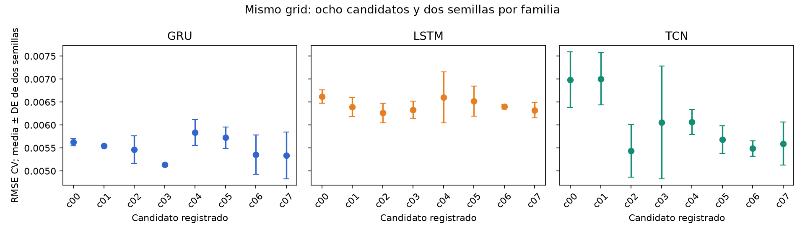
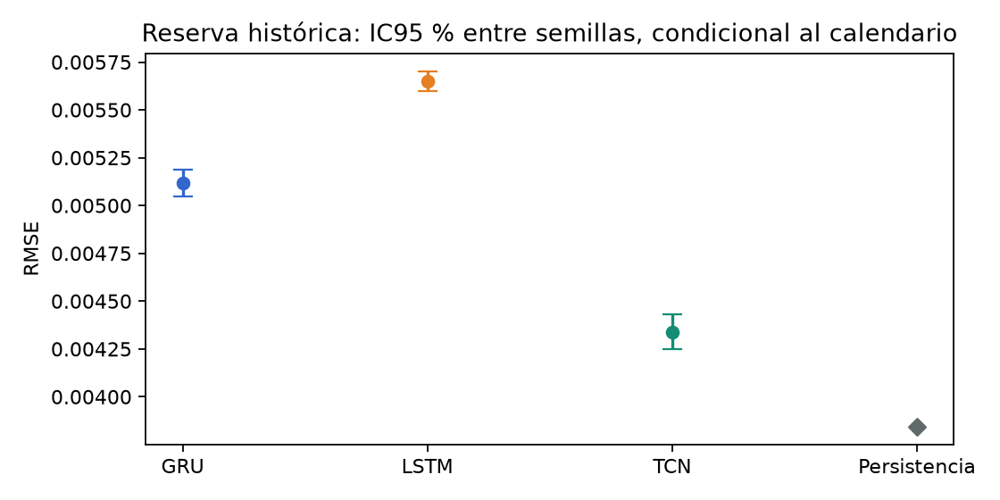
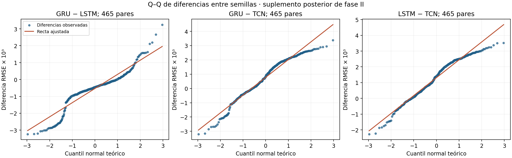
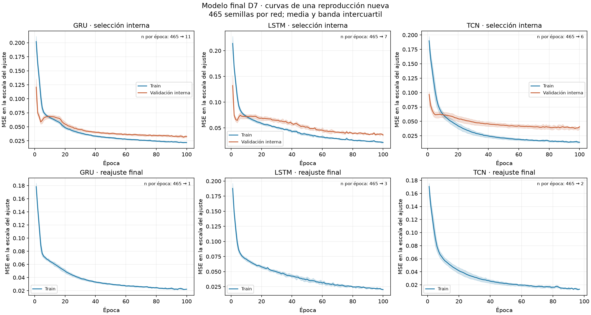
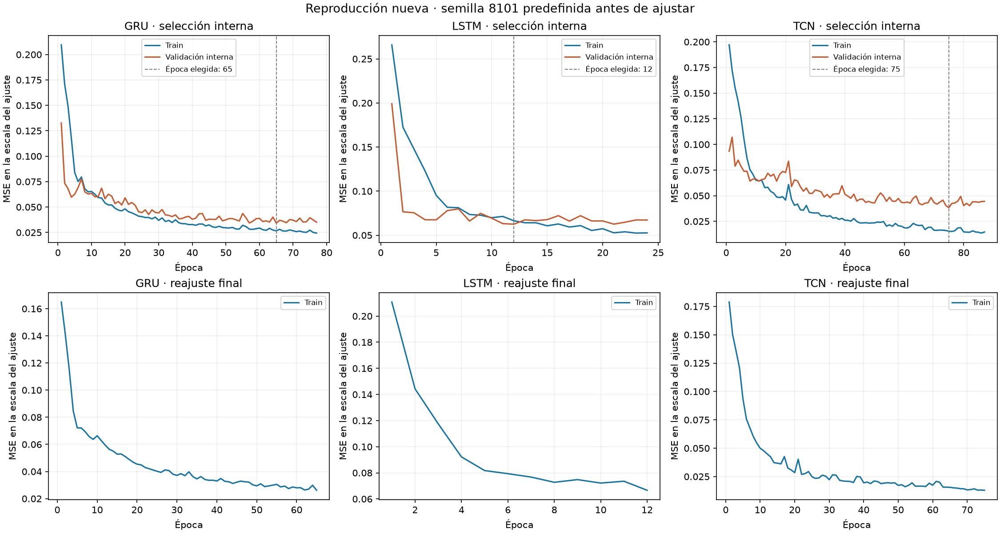

9. Estudio D7 con piloto, ajuste equitativo y evaluación preespecificada#
Este capítulo documenta una nueva fase principal de GRU–LSTM–TCN con entrada D=7, objetivo n=7 y horizonte h=1. Su diseño, búsqueda, piloto y análisis se registraron antes de la ejecución definitiva y de calcular resultados en la reserva del 01/09–30/10/2026. La cronología verificable y los resultados de esta fase se identifican por separado del benchmark exploratorio anterior.
9.1. Dos fases y dos alcances#
Elemento |
Fase I: benchmark exploratorio |
Fase II: estudio D7 planificado |
|---|---|---|
Entradas |
D=7/14/21/28 |
D=7, seleccionado previamente con desarrollo |
Ajuste de hiperparámetros |
Recetas fijas, sin búsqueda nueva comparable |
Ocho candidatos y dos semillas por familia, mismo método y presupuesto |
Piloto |
No dimensionó la fase I |
Diez semillas nuevas por familia; procedimiento fijado antes de la ejecución definitiva |
Repeticiones definitivas |
Diez por familia e historia, presupuesto fijo |
465 por familia, calculadas a partir del piloto |
Evaluación |
Enero de 2025–agosto de 2026, periodo ya observado |
Septiembre–30 de octubre de 2026, reserva histórica no usada anteriormente para resultados |
Inferencia |
Contrastes y margen posteriores |
Comparaciones, margen y multiplicidad fijados antes de la nueva evaluación |
Las tablas de los capítulos 3–8 conservan sus identificadores y métricas de fase I. Su publicación no cambia de fecha ni adquiere carácter prospectivo. El piloto y el HPO de este capítulo se aplican a D7; no dimensionan retrospectivamente D14/21/28.
La adquisición había recorrido las filas de los archivos de la nueva reserva para auditar integridad, timestamps y esquema. Según los registros conservados, ese periodo no había sido usado para calcular objetivos, seleccionar recetas o evaluar modelos. Por eso se describe como una reserva histórica no utilizada anteriormente para resultados, sin afirmar que los ZIP nunca se abrieron, que las predicciones se emitieron en vivo o que existe otro mercado independiente.
9.2. Registro y orden de ejecución#
El diseño y el código quedaron publicados en ac7dd7f. El cierre de planificación se publicó después del piloto y antes del ajuste definitivo, con R=465, recetas y hashes fijados. La siguiente secuencia separa decisiones y resultados:
Hito |
Fecha UTC |
Evidencia |
|---|---|---|
Publicación del diseño y código antes del HPO |
05/11/2026 18:58:34 |
|
Registro firmado anterior al primer entrenamiento |
2026-11-05T18:58:45.401767+00:00 |
|
Selección de recetas con desarrollo y congelación antes del piloto |
2026-11-05T19:08:54.034356+00:00 |
|
Cierre del piloto y dimensionamiento anterior al ajuste definitivo |
2026-11-05T19:10:49.722409+00:00 |
|
Cierre de todos los pesos y escaladores |
2026-11-05T19:29:06.360013+00:00 |
|
Primer acceso para derivar la cohorte de la nueva reserva |
2026-11-05T19:29:59.711588+00:00 |
|
Análisis de las predicciones guardadas |
2026-11-05T19:30:55.968197+00:00 |
No se eligieron semillas, recetas o pruebas a partir del error de la reserva. Los fallos técnicos conservan sus registros y no autorizan sustituir una semilla desfavorable. Una ejecución incompleta o un resultado no concluyente se reporta con su estado real.
9.3. Búsqueda comparable de hiperparámetros#
La búsqueda exhaustiva utiliza ocho candidatos por familia, correspondientes al producto de dos anchos, dos tasas de aprendizaje y dos niveles de dropout:
Hiperparámetro |
GRU |
LSTM |
TCN |
|---|---|---|---|
Ancho |
16 o 32 unidades |
16 o 32 unidades |
8 o 16 canales |
Learning rate |
0,001 o 0,003 |
0,001 o 0,003 |
0,001 o 0,003 |
Dropout |
0 o 0,1 |
0 o 0,1 |
0 o 0,1 |
Candidatos |
8 |
8 |
8 |
Semillas de búsqueda |
6101 y 6102 |
6101 y 6102 |
6101 y 6102 |
Las arquitecturas conservan una capa recurrente GRU/LSTM y tres bloques residuales causales de TCN. Se comparten AdamW, decaimiento de pesos 0,0001, batch 32, clipping 1, máximo de cien épocas, paciencia 12, min_delta 0,00001 y el mismo criterio cronológico de parada. Igualar amplitud y evaluaciones controla el esfuerzo de búsqueda; no implica idéntico número de parámetros o tiempo por candidato.
Los índices reales de split_train_val_forwardChaining se agrupan en diez bloques mensuales de enero–octubre de 2024, con embargo de siete días. Cada candidato y semilla realiza selección interna y reajuste fresco en cada mes: 320 ajustes por familia y 960 en total. La puntuación es la media entre las dos semillas de sus RMSE sobre las 305 fechas concatenadas. No se promedian RMSE mensuales ni se evalúa un ensemble. Los empates siguen el menor número de parámetros y después el identificador de candidato; entre familias, el orden alfabético fijado.
Modelo |
Candidato |
Ancho |
Learning rate |
Dropout |
Parámetros |
RMSE enero–octubre, media ± DE |
|---|---|---|---|---|---|---|
GRU |
c03 |
16 |
0,003 |
0,1 |
1.121 |
0,00513620 ± 0,00003068 |
LSTM |
c02 |
16 |
0,003 |
0,0 |
1.489 |
0,00626389 ± 0,00021402 |
TCN |
c02 |
8 |
0,003 |
0,0 |
1.185 |
0,00543698 ± 0,00056998 |

Las tres recetas y el baseline de fase II se congelan por ese criterio de desarrollo, antes del piloto y de la reserva. Desarrollo ya había sido observado en fases anteriores: este HPO no se presenta como una evaluación externa anidada.
9.4. Piloto anterior a la ejecución definitiva#
Se ejecutan las tres recetas seleccionadas con diez semillas independientes 7101–7110, disjuntas de las usadas en HPO y en la comparación definitiva. El origen es el 01/11/2024 y la evaluación ocupa 60 días, del 01/11 al 30/12/2024. La selección de épocas utiliza validación interna pasada de 90 días con embargo propio; un reajuste fresco usa el entrenamiento permitido. Los pesos permanecen fijos durante los 60 días.
Esta longitud y ausencia de reajuste imitan la evaluación nueva mejor que una métrica anual. El piloto sigue condicionado a un calendario de desarrollo conocido; no garantiza que su dispersión se transfiera sin cambios a 2026.
Modelo |
Semillas |
RMSE piloto, media ± DE |
Coeficiente de variación |
|---|---|---|---|
GRU |
10 |
0,00467578 ± 0,00025013 |
5,35 % |
LSTM |
10 |
0,00587301 ± 0,00080547 |
13,71 % |
TCN |
10 |
0,00525383 ± 0,00048561 |
9,24 % |
Para cada par se calcula la diferencia de RMSE por semilla y su desviación estándar muestral. El dimensionamiento utiliza esa dispersión pareada, no las DE marginales sumadas ni los días como si fueran repeticiones independientes.
Par A–B |
Diferencia piloto A−B, media |
DE pareada |
Cota DE simultánea 80 % |
Shapiro–Wilk, p |
|---|---|---|---|---|
GRU–LSTM |
-0,00119723 |
0,00086285 |
0,00135631 |
0,2690 |
GRU–TCN |
-0,00057805 |
0,00048886 |
0,00076844 |
0,5258 |
LSTM–TCN |
0,00061918 |
0,00108827 |
0,00171065 |
0,5792 |
Las diferencias medias del piloto son descriptivas. La alternativa de planificación sigue siendo δ fijada previamente; no se sustituye por el efecto favorable observado. Shapiro–Wilk no demuestra normalidad ni cambia el contraste registrado.
9.5. Dimensionamiento, potencia y diferencia mínima detectable#
La métrica primaria es RMSE en unidades originales de σ₇. Se fija antes de esta fase la alternativa académica de planificación
correspondiente al 5 % de la RMSE CV del GRU/D7 inicial. Su procedencia es posterior al test de fase I; para fase II queda registrada antes de la nueva evaluación. No se convierte en un criterio anterior del experimento histórico ni en utilidad financiera.
Se planifican tres comparaciones bilaterales de diferencias de RMSE, con α=0,05 y referencia conservadora α*=0,05/3. El cálculo usa t no central y busca el menor entero R≥10 con potencia marginal de al menos 0,80 para cada par al efecto δ. Con m=10 semillas piloto y ν=m−1, la DE de planificación incluye la incertidumbre mediante el límite superior simultáneo del 80 %:
La asignación definitiva toma el máximo R de los tres pares. Se reportan también los resultados con DE puntual y límites simultáneos del 90 % y 95 %, sin escoger retrospectivamente el que produzca menos ejecuciones.
Par |
R con DE puntual |
R con cota DE 80 % |
R definitivo común |
Potencia planificada con cota DE |
|---|---|---|---|---|
GRU–LSTM |
121 |
293 |
465 |
0,954577 |
GRU–TCN |
41 |
96 |
465 |
0,999999 |
LSTM–TCN |
190 |
465 |
465 |
0,800891 |
Escenario de dispersión |
R máximo de los tres pares |
|---|---|
DE puntual |
190 |
Cota superior simultánea 80 % |
465 |
Cota superior simultánea 90 % |
575 |
Cota superior simultánea 95 % |
702 |
La decisión registrada fue R=465 por familia, con semillas nuevas 8101–8565. La diferencia mínima detectable se calcula con el mismo contraste, R y DE de planificación; no se presenta una «potencia alcanzada» calculada a partir del efecto observado en test.
Par |
MDE a R=465 y cota DE 80 % |
δ de planificación |
|---|---|---|
GRU–LSTM |
0,00020414183 |
0,00025772843 |
GRU–TCN |
0,00011566032 |
0,00025772843 |
LSTM–TCN |
0,00025747480 |
0,00025772843 |
La pareja LSTM–TCN determina R. Para esa cota de dispersión, R=464 da potencia 0,79991073 y R=465 da 0,80089111. Ese umbral es una propiedad del diseño y los supuestos fijados antes de la reserva; no es potencia calculada con el efecto del test.
Alcance de la potencia: el cálculo describe aleatoriedad del entrenamiento bajo diferencias gaussianas e inicializaciones independientes, condicionada al calendario y a la transferencia de dispersión desde el piloto. No acredita potencia conjunta del 80 % para rechazar las tres hipótesis ni potencia temporal sobre los 60 días. La deriva del mercado y las etiquetas solapadas son incertidumbres distintas.
9.6. Ajuste definitivo y reserva nueva#
Se ajustan desde cero las tres recetas con R semillas disjuntas. El desarrollo se mantiene en 2023–2024; no se incorporan etiquetas de 2025 o 2026 para entrenar. El origen nominal es el 01/01/2025 y el embargo de siete días admite resultados hasta el 24/12/2024. Cada semilla selecciona épocas con pasado permitido y realiza un reajuste fresco. Sus escaladores se estiman únicamente con el entrenamiento correspondiente. El tramo enero de 2025–agosto de 2026 no se reasigna al entrenamiento: se conserva la decisión de ajustar con desarrollo 2023–2024. El largo intervalo hasta la nueva reserva y los cambios de régimen pueden afectar la generalización; esta fase no simula una adaptación continua del modelo durante ese lapso.
Antes de construir las etiquetas de la reserva se congelan 3R checkpoints y sus escaladores. Agosto de 2026 aporta únicamente el contexto ya observable para las primeras ventanas y etiquetas de septiembre. La cohorte de resultados es 01/09–30/10/2026, 60 fechas comunes. La evaluación utiliza pesos y escaladores fijos, un pase de puntuación explícito y predicciones conservadas; no modifica hiperparámetros ni aplica parada según resultados.
Etapa |
Trayectorias / modelos |
Ajustes nuevos |
Predicciones de evaluación |
|---|---|---|---|
HPO |
48 trayectorias, 480 segmentos |
960 |
14.640 |
Piloto |
30 trayectorias |
60 |
1.800 |
Definitivo |
1.395 modelos frescos |
2.790 |
83.700 |
Persistencia de la reserva |
Una trayectoria determinista |
0 |
60 |
9.6.1. Métricas de la reserva#
Modelo |
RMSE, media ± DE |
IC95 % marginal RMSE |
MAE, media |
MSE, media |
R², media ± DE |
MAPE, media (%) |
MASE, media |
|---|---|---|---|---|---|---|---|
GRU |
0,00511696 ± 0,00077519 |
[0,00504631; 0,00518760] |
0,00391028 |
0,00002678286 |
0,348891 ± 0,166926 |
27,3519 |
1,442772 |
LSTM |
0,00565123 ± 0,00056569 |
[0,00559968; 0,00570278] |
0,00429363 |
0,00003225568 |
0,215843 ± 0,139802 |
29,9635 |
1,584217 |
TCN |
0,00433967 ± 0,00099896 |
[0,00424864; 0,00443070] |
0,00338399 |
0,00001982850 |
0,517956 ± 0,216707 |
25,4918 |
1,248587 |
Persistencia |
0,00384478 |
No aplica: determinista |
0,00212123 |
0,00001478230 |
0,640632 |
16,4344 |
0,782667 |
Modelo |
Ajuste definitivo por semilla, segundos media ± DE |
Inferencia de 60 fechas, segundos media ± DE |
|---|---|---|
GRU |
1,4198 ± 1,7854 |
0,000376 ± 0,000133 |
LSTM |
0,6190 ± 0,6440 |
0,000338 ± 0,000218 |
TCN |
4,1816 ± 3,0943 |
0,000878 ± 0,000206 |
Los tiempos son de pared en CPU, bajo la concurrencia registrada. La inferencia corresponde a un pase de las sesenta ventanas por checkpoint, sin un benchmark repetido de latencia. No se infiere un speedup frente a fase I con condiciones diferentes. El desglose de costes conserva también búsqueda y piloto.

Persistencia conserva una trayectoria determinista, sin diez o R copias para simular variación entre semillas. Se reportan RMSE, MAE, MSE, MAPE, R² y MASE con sus coberturas. Las métricas de 60 días no se comparan como una mejora directa con la RMSE del test anterior de 608 días: cambia la cohorte y el régimen.
9.6.2. Comparaciones primarias fijadas previamente#
La familia principal contiene GRU–LSTM, GRU–TCN y LSTM–TCN. Se reportan diferencia media pareada, IC95 % marginal y familiar, t pareada, p-valores numéricos sin ajustar y con Holm-3, efecto d_z y su sensibilidad bootstrap entre semillas. Shapiro–Wilk es diagnóstico; no decide qué prueba se publica según el p-valor más favorable.
Comparación A−B |
Diferencia RMSE |
IC95 % marginal |
IC95 % familiar |
p sin ajustar |
p Holm-3 |
d_z |
|---|---|---|---|---|---|---|
GRU−LSTM |
-0,00053427 |
[-0,00061511; -0,00045344] |
[-0,00063311; -0,00043544] |
4,057e-33 |
4,057e-33 |
-0,6023 |
GRU−TCN |
0,00077729 |
[0,00066247; 0,00089210] |
[0,00063690; 0,00091767] |
1,953e-34 |
3,906e-34 |
0,6169 |
LSTM−TCN |
0,00131156 |
[0,00120706; 0,00141606] |
[0,00118379; 0,00143933] |
1,948e-86 |
5,843e-86 |
1,1438 |
Diferencia negativa favorece A. Los tamaños de efecto y sus IC bootstrap, diagnóstico de normalidad y estados numéricos se conservan en el CSV de los tres pares. Los intervalos familiares son Bonferroni; la decisión de p utiliza Holm.
La familia primaria registra 3/3 comparaciones con p Holm menor que 0,05, bajo la referencia t fijada. El ranking descriptivo por RMSE media de esta reserva sitúa a TCN primero entre las redes y a Persistencia al considerar también persistencia. El baseline operativo sigue siendo GRU/D7-c03 de 16 unidades, seleccionado antes del piloto y de la reserva; no se reelige por ese ranking. Las diferencias entre semillas están condicionadas a estas mismas sesenta fechas, no a periodos o mercados independientes.
Normalidad rechazada en la comparación definitiva. Shapiro–Wilk rechaza normalidad en los tres pares:
Diagnóstico de las diferencias definitivas |
p Shapiro–Wilk |
|---|---|
GRU−LSTM |
6,3417e-18 |
GRU−TCN |
3,0188e-09 |
LSTM−TCN |
1,5817e-08 |
Por eso las t y sus IC se interpretan como aproximaciones para 465 pares independientes condicionados al calendario, apoyadas en un argumento asintótico que requiere varianza finita, no como inferencia exacta demostrada bajo normalidad. El número grande de semillas no prueba por sí solo la cobertura. El piloto de diez pares no había rechazado normalidad, pero no podía establecerla ni garantizar su transferencia. La potencia 0,80 sigue siendo una propiedad de planificación bajo los supuestos registrados; no se convierte en potencia alcanzada.
Se conservan las pruebas previamente fijadas y se informa esta limitación; no se sustituye después de ver resultados por el método con menor p. El bootstrap preespecificado de d_z aporta sensibilidad del efecto, sin transformar retrospectivamente los p-valores t en pruebas exactas.
La dispersión del piloto tampoco se transfirió uniformemente. La DE definitiva observada de GRU–TCN es aproximadamente 1,64 veces su cota de planificación:
Transferencia de dispersión |
Cota DE del piloto, 80 % simultánea |
DE definitiva observada |
Razón observada / cota |
|---|---|---|---|
GRU−LSTM |
0,00135631 |
0,00088703 |
0,654 |
GRU−TCN |
0,00076844 |
0,00125995 |
1,640 |
LSTM−TCN |
0,00171065 |
0,00114671 |
0,670 |
Esa cota era incertidumbre sobre el piloto bajo el modelo de planificación, no una garantía frente a otro régimen. R=465 sigue siendo el resultado correcto del cálculo previo y no se reduce o redefine después del test, pero estos datos no demuestran que se alcanzara su potencia prevista. La MDE recalculada con la DE observada que se presenta a continuación es sensibilidad retrospectiva del diseño, no un nuevo piloto o una validación de potencia.
Sensibilidad retrospectiva de la MDE, con referencia normal aproximada. Después de evaluar se aplica la función detectable_difference ya registrada a las DE definitivas, manteniendo R=465, α*=0,05/3 y el objetivo de referencia 0,80. Es un diagnóstico descriptivo posterior, no un nuevo análisis primario, potencia observada/alcanzada o evidencia preespecificada adicional.
Par |
MDE retrospectiva aproximada con DE observada |
|---|---|
GRU−LSTM |
0,00013350927 |
GRU−TCN |
0,00018963813 |
LSTM−TCN |
0,00017259459 |
Las tres MDE son menores que δ=0,00025772843 bajo esa referencia. El cálculo no demuestra potencia real del 80 %: persisten el rechazo de normalidad, la transferencia imperfecta de dispersión y la ausencia de potencia temporal acreditada. No se modifica el R ni ninguna conclusión primaria a partir de esta sensibilidad.
Una diferencia distinguible de cero y una reducción superior al 5 % son afirmaciones diferentes. El informe distingue estimaciones puntuales de evidencia mediante límites de confianza que superen el margen.
9.6.3. Dependencia temporal y análisis secundarios#
DM utiliza la pérdida cuadrática diaria media de los modelos individuales, no el error de sus predicciones promediadas. Se fija HAC con seis rezagos, horizonte uno y corrección Harvey–Leybourne–Newbold. Su familia secundaria de seis pares incluye las tres comparaciones neuronales y cada red frente a persistencia, con Holm-6. Ese ajuste es propio del análisis secundario; no se presenta como control conjunto de todos los contrastes del libro ni como una corroboración independiente de las pruebas entre semillas.
Comparación |
DM-HLN |
p sin ajustar |
p Holm-6 |
|---|---|---|---|
GRU−LSTM |
-2,14970 |
0,035690 |
0,214140 |
GRU−TCN |
1,51721 |
0,134553 |
0,312176 |
LSTM−TCN |
1,79334 |
0,078044 |
0,312176 |
GRU−Persistencia |
1,77097 |
0,081732 |
0,312176 |
LSTM−Persistencia |
1,97290 |
0,053198 |
0,265991 |
TCN−Persistencia |
1,38736 |
0,170550 |
0,312176 |
El bootstrap temporal remuestrea fechas emparejadas con bloques circulares de longitud principal siete y sensibilidades tres/catorce, 4.999 réplicas y semilla registrada. Conserva la media de RMSE por semilla. Sus intervalos condicionan a los modelos ajustados y a este periodo corto; no representan otro entrenamiento o mercado independiente.
Comparación A−B, bloque 7 |
Diferencia RMSE |
IC95 % temporal familiar |
Ganancia A frente a B (%) |
IC temporal familiar de ganancia (%) |
|---|---|---|---|---|
GRU−LSTM |
-0,00053427 |
[-0,00095181; -0,00011274] |
9,454 |
[3,406; 13,115] |
GRU−TCN |
0,00077729 |
[-0,00026960; 0,00167658] |
-17,911 |
[-32,496; 8,524] |
LSTM−TCN |
0,00131156 |
[-0,00012600; 0,00258912] |
-30,223 |
[-50,617; 3,661] |
GRU−Persistencia |
0,00127218 |
[-0,00011566; 0,00290888] |
-33,089 |
[-88,580; 2,910] |
LSTM−Persistencia |
0,00180645 |
[0,00012537; 0,00375502] |
-46,985 |
[-113,690; -3,688] |
TCN−Persistencia |
0,00049489 |
[-0,00067105; 0,00163266] |
-12,872 |
[-58,478; 13,616] |
DM/HAC6/HLN registra 0/6 rechazos tras Holm; el menor p ajustado es 0,214140. La ausencia de rechazo no demuestra equivalencia ni que los errores sean idénticos. Los IC temporales familiares del bloque siete excluyen cero en 2/6 pares. Ninguna dirección de las seis comparaciones acredita una ganancia superior al 5 % mediante el límite temporal familiar del bloque principal. GRU frente a LSTM tiene un límite inferior de ganancia del 3,406 %, por debajo del 5 %; los otros intervalos favorables tampoco superan ese umbral. Persistencia tiene menor RMSE puntual que todas las redes. Son análisis secundarios con supuestos de dependencia y estabilidad aproximados sobre sesenta fechas. No sustituyen la comparación primaria entre semillas ni garantizan su misma conclusión. Las sensibilidades de bloques tres/catorce se conservan en el CSV completo, sin escoger la longitud que resulte más favorable.
Los residuos y sus diagnósticos se interpretan con la longitud de 60 fechas y el solapamiento de σ₇. Rechazar iid no identifica por sí solo no linealidad aprovechable. No se usa este análisis secundario para cambiar retrospectivamente el ganador seleccionado con desarrollo.
9.7. Cierre y limitaciones que permanecen#
Requisito |
Evidencia de fase II |
Alcance |
|---|---|---|
HPO comparable |
Ocho candidatos, dos semillas y diez folds por familia; todos los candidatos reportados |
Espacio compacto registrado, no óptimo global de cada arquitectura |
Piloto antes de la ejecución definitiva |
Diez semillas nuevas por familia, recetas congeladas y cohorte de 60 días |
Desarrollo conocido, dispersión de entrenamiento condicionada al calendario |
Dimensionamiento |
t no central, incertidumbre de DE, multiplicidad y R registrado |
Potencia de planificación marginal, no potencia temporal o conjunta |
Inferencia anterior a la nueva reserva |
Familia, margen y métodos registrados antes de puntuar |
Reserva histórica de un único mercado y periodo corto |
Historia experimental |
Fase I conservada con sus hashes y carácter exploratorio |
Los resultados anteriores no se vuelven prospectivos |
Después de publicar esta evaluación, sus 60 fechas son resultados conocidos. Una reproducción futura de los mismos archivos no recupera un holdout sin consultar ni adquiere otra confirmación independiente.
La literatura conserva sus propios límites: en el corte verificado del 05/11/2026, TCN aparece como comparador independiente en 1/7 estudios y la inclusión conjunta de GRU/LSTM necesita argumentación de mecanismos y alcance. La ampliación nativa del 06/11 añade registros WoS/Scopus para cribado; sus 244 ocurrencias y 182 grupos provisionales no equivalen a 182 estudios incluidos ni alteran por sí solos esas frecuencias. El capítulo 3 documenta esta separación. Hacer este estudio tampoco aumenta la recurrencia bibliográfica ni certifica indexación individual de los artículos.
Las dos lecturas completas adicionales del 06/11, sobre CVI implícita y modelos híbridos GARCH, llevaron ese complemento a 42 referencias y conservan sus estratos propios. No cambian el objetivo σ₇, las recetas seleccionadas, el baseline o el análisis ya registrado de esta fase.
La fase II cierra el orden piloto–dimensionamiento–ajuste definitivo y el esfuerzo comparable dentro del espacio de HPO registrado. También fija sus métodos antes de evaluar la nueva reserva. Las conclusiones de precisión y relevancia se limitan a lo que muestran sus intervalos y análisis; completar ese orden no garantiza que todas las redes superen persistencia, una mejora práctica o generalización temporal. El benchmark anterior conserva sus resultados exploratorios.
9.8. Código y archivos verificables#
La entrada es run_gru_lstm_tcn_planned.py, con carga de datos y estadística. BUILD.md detalla los comandos por fase.
Evidencia |
Archivo |
|---|---|
Diseño y registro anterior al HPO |
|
Búsqueda y recetas seleccionadas |
|
Piloto y dimensionamiento |
|
Métricas e inferencia |
|
Procedencia y cierre |
Los artefactos públicos son metadatos, configuraciones, agregados y figuras; las observaciones/predicciones individuales, escaladores y checkpoints completos permanecen en la evidencia conservada. La construcción del JBook consume los archivos publicados y no vuelve a entrenar o puntuar la reserva.
9.9. Suplemento diagnóstico posterior: Q–Q y comparación global#
El 06/11/2026 se añadió este análisis suplementario posterior, a partir de las métricas RMSE por semilla ya publicadas. No formaba parte del prerregistro y no sustituye la familia primaria t/Holm, el dimensionamiento, las recetas o el baseline GRU fijado con desarrollo. Atiende la inspección gráfica y la comparación global solicitadas en la guía E1, §5.4, pp. 23–24, dejando explícita su cronología. No añade entrenamientos, acceso a archivos brutos de la reserva, cargas de pesos o pronósticos.
9.9.1. Normalidad de las diferencias: evidencia gráfica#

Figura 1 Q–Q de las 465 diferencias RMSE por par. El eje vertical expresa diferencias A−B multiplicadas por 10³; la recta es un ajuste descriptivo, sin banda de confianza.#
Las desviaciones de la recta, especialmente las colas de GRU−LSTM, hacen visible lo que Shapiro–Wilk ya rechazaba. Las asimetrías muestrales corregidas son −0,504, −0,561 y −0,457; el exceso de curtosis de GRU−LSTM es 2,762. La figura no convierte la t primaria en una prueba normal exacta ni demuestra que una prueba alternativa carezca de supuestos. Se conserva su interpretación asintótica condicionada al calendario. No se exige igualdad de varianzas marginales entre redes para una t pareada: el objeto de esa inferencia es la diferencia dentro de semilla.
Los diagnósticos numéricos y las 1.395 coordenadas de los Q–Q permiten reconstruir las figuras desde los mismos valores guardados, sin redondear diferencias antes de analizarlas.
9.9.2. Friedman y concordancia del orden entre semillas#
Se comparan las tres redes dentro de cada una de las 465 semillas emparejadas. Friedman obtiene χ²(2)=391,625806, p≈9,1104×10⁻⁸⁶, con aproximación chi-cuadrado; no hay empates exactos de RMSE dentro de bloque. El resultado es una comparación global posterior y no una nueva selección del modelo operativo.
Modelo |
Rango medio de RMSE, menor es mejor |
|---|---|
GRU |
1,890323 |
LSTM |
2,696774 |
TCN |
1,412903 |
La W de Kendall es 0,421103, calculada como χ²/[465×(3−1)]. Resume la concordancia del orden entre semillas: no es una reducción porcentual de RMSE, un efecto económico ni evidencia de mejora temporal. La hipótesis global se interpreta en términos de distribuciones/rangos bajo intercambio de etiquetas de modelo dentro de bloques independientes. Interpretarla exclusivamente como igualdad de medianas o localización exige formas comparables de las distribuciones. Los bloques son inicializaciones sobre las mismas fechas, no 465 periodos o mercados independientes. El resultado global completo conserva sus supuestos y rangos.
9.9.3. Sensibilidad pareada de rangos#
Como sensibilidad posterior se añaden tres Wilcoxon bilaterales de rangos con signo, emparejados por semilla, con aproximación normal sin corrección de continuidad y ajuste Holm dentro de esta familia suplementaria de tres pares. Se descartan ceros exactos y se asignan rangos medios a empates absolutos; en estos datos los tres pares tienen 465 diferencias no nulas. No se presentan p exactas.
Par A−B |
Estadístico W, menor suma de rangos |
p Holm-3 suplementaria |
Efecto biserial pareado A−B |
|---|---|---|---|
GRU−LSTM |
14.963 |
2,2598×10⁻⁴¹ |
−0,723790 |
GRU−TCN |
21.091 |
3,7150×10⁻³⁰ |
0,610670 |
LSTM−TCN |
6.593 |
4,7981×10⁻⁶⁰ |
0,878296 |
El efecto biserial usa (suma positiva−suma negativa)/(suma positiva+suma negativa); un signo negativo favorece A porque menor RMSE es mejor. No estima la misma magnitud que d_z. Wilcoxon no elimina automáticamente el problema de normalidad: una interpretación como desplazamiento de localización requiere simetría de las diferencias, que las asimetrías y Q–Q invitan a tratar con cautela. El CSV de sensibilidad publica sumas de rangos, ceros, estadísticos, método y p sin ajustar y ajustadas.
Los tres pares suplementarios rechazan su nulidad a 0,05 después de Holm. Reutilizan los mismos datos que las pruebas primarias; no son corroboración independiente ni se escoge entre métodos por su p más pequeña. El ajuste Holm-3 no cubre todos los contrastes del libro. Este suplemento no altera DM/HAC/HLN, el bootstrap por bloques o la conclusión sobre el margen del 5 %: sigue sin acreditarse una mejora práctica temporal mediante sus límites familiares principales.
9.9.4. Reproducción y evidencia que no puede recuperarse de agregados#
El nuevo script suplementario consume únicamente run_metrics.csv y comprueba las identidades de 18 fuentes científicas y dos registros públicos congelados. Los hashes acreditan identidad de esos archivos, no reproducción del entrenamiento. La procedencia del suplemento autentica entradas, código y sus ocho archivos públicos derivados.
python -m pip install -r requirements-e1-supplement.lock.txt
python scripts/supplement_e1_planned_statistics.py
python -m unittest discover -s tests -p 'test_e1_statistics_supplement.py'
El resumen de ejecución registra las versiones efectivamente usadas en este suplemento: Python 3.12.14, NumPy 2.3.5, pandas 2.2.3, SciPy 1.17.0 y Matplotlib 3.10.8. Son un entorno posterior separado; no se atribuyen a las corridas históricas ni sustituyen sus dependencias registradas.
La inspección de existencia del 06/11 no encontró en este entorno la ruta privada que declara el ejecutor original, /workspace/e1_new_study_20261105/run. Por ello no se recuperaron curvas history_inner.csv/history_refit.csv, pesos, escaladores o vectores diarios. La comprobación de disponibilidad sólo examina presencia de archivos: su ausencia aquí no demuestra que no se ejecutaran o que el autor no los conserve. Los RMSE agregados no permiten reconstruir esos contenidos. La reproducción independiente de DM, bootstrap temporal y BDS desde observaciones sigue pendiente. El apartado siguiente documenta una ejecución nueva de desarrollo, con procedencia propia.
9.10. Curvas públicas reproducidas de las recetas finales#
La ausencia de las historias privadas motivó una reproducción nueva y posterior, sin modificar el benchmark. El protocolo y ejecutor se publicaron y se consultaron mediante GitHub antes de registrar y comenzar los nuevos ajustes. El recibo documenta ese orden observado; la fecha de un commit por sí sola no demuestra cuándo se publicó. Se mantiene el estado de preparación con cero ajustes y se añaden registros de ejecución separados.
Se reproducen las tres recetas congeladas, con las 465 semillas 8101–8565 por familia: 1.395 trayectorias y 2.790 etapas de selección interna y reajuste. Se utilizan únicamente los derivados de desarrollo 2023–2024, los módulos originales sin cambios y sus versiones fijadas. La nueva ejecución no abre precios de la reserva, no genera pronósticos y no obtiene una nueva muestra de evaluación. La semilla ilustrativa 8101 quedó fijada en el protocolo antes de entrenar; no se elige por su curva o error.
9.10.1. Pérdidas y parada temprana#

Figura 2 Reproducción de las recetas finales. Se muestran pérdidas MSE escaladas por familia y etapa, media, intervalo intercuartílico y número de trayectorias disponibles en cada época. Son pérdidas de desarrollo, no RMSE de la reserva.#
La etapa interna permite comparar entrenamiento en modo evaluación con validación pasada y seleccionar la duración mediante la regla original. El reajuste empieza desde cero con esa duración y sólo registra entrenamiento: añadirle una validación sobre la reserva cambiaría el diseño. La pérdida de optimización usa el modo entrenamiento y puede diferir de la pérdida calculada en modo evaluación, especialmente con dropout. Se distinguen ambas en el CSV.
El número de curvas disponible disminuye por parada temprana. Las épocas tardías resumen una selección de trayectorias más largas y no las mismas 465 inicializaciones de la primera época. Las escalas se ajustan dentro de cada entrenamiento; comparar visualmente pérdidas escaladas entre semillas o familias no sustituye la comparación de errores en unidades originales. Un descenso de pérdida o un gap local no certifica ausencia global de sobreajuste, robustez temporal o superioridad entre modelos.

Figura 3 Trayectorias de la semilla 8101 fijada de antemano. La marca de época seleccionada pertenece a la validación interna; el reajuste conserva esa duración.#
Las curvas por corrida y época, el resumen agregado y la duración por familia permiten comprobar la figura y sus denominadores. No contienen observaciones del mercado, pronósticos, pesos o valores de escaladores.
Se publican 59.210 registros de pérdida por época y corrida. La parada interna y el reajuste tienen las siguientes duraciones:
Familia |
Trayectorias |
Época elegida, mediana [mín.; máx.] |
Selecciones internas terminadas antes de 100 épocas |
|---|---|---|---|
GRU |
465 |
4 [3; 100] |
454 |
LSTM |
465 |
4 [2; 100] |
458 |
TCN |
465 |
17 [3; 97] |
459 |
Las medianas de cuatro épocas de GRU/LSTM muestran por qué el descenso de la media agregada hasta la época 100 no representa una corrida típica. Al final contribuyen sólo 11/7/6 curvas internas de GRU/LSTM/TCN. La semilla 8101 selecciona 65/12/75 épocas, respectivamente; es una ilustración fijada de antemano, no una ejecución representativa de esas medianas. La separación posterior entre entrenamiento y validación describe el calendario interno y las trayectorias que siguen activas, sin justificar alargar la duración ya seleccionada.
9.10.2. Identidad y alcance de la reproducción#
El comparador de integridad contrasta 8.370 artefactos científicos con el manifiesto histórico, incluidos 2.790 CSV de curvas, además de configuraciones, preprocesamiento, particiones y checkpoints. Los checkpoints se comparan de forma privada; sólo se publican los hashes y el resultado de cada contraste. Coincidencia de configuración o época no equivale a identidad de pesos o pérdidas. Se publican las diferencias sin sustituir semillas o ajustar recetas para forzar igualdad.
Coinciden byte a byte 4.185/4.185 archivos de configuración, preprocesamiento y partición. No coincide ninguno de los 2.790 CSV de curvas ni de los 1.395 checkpoints serializados. La época elegida coincide en 1.366/1.395 trayectorias: todas las GRU/LSTM y 436/465 TCN. Por tanto, no se acredita reproducción exacta del entrenamiento. Sin los archivos privados originales no se cuantifica la diferencia de pérdidas o tensores ni se determina su causa; una diferencia de hash de un checkpoint tampoco mide por sí sola una diferencia numérica entre sus pesos.
La ejecución acredita curvas observadas para una reproducción de estas recetas bajo el entorno registrado. No recupera los archivos originales ni añade 1.395 muestras independientes al benchmark. El baseline GRU, el dimensionamiento, las métricas de la reserva y sus conclusiones se conservan. El resumen de ejecución y el registro de procedencia identifican fechas, versiones, integridad y límites.
9.10.3. Reproducción y descarga#
El ejecutor exige un checkout limpio del protocolo publicado y una salida privada nueva. El exportador verifica el registro y la finalización de las 1.395 trayectorias antes de publicar una lista cerrada de pérdidas, agregados y procedencia. BUILD.md contiene los comandos y distingue sus dependencias de las usadas para construir el libro. Las curvas están incluidas en el producto 8.5; el código, configuración y declaración están en 8.2, 8.6 y 8.7.
9.11. Auditoría numérica y repetibilidad actual#
La guía §4.3 exige controlar las semillas, declarar si se utiliza determinismo estricto y entregar dependencias, configuración y ejecutores. Esos requisitos se distinguen de recuperar exactamente los archivos privados de una ejecución anterior. Esta auditoría conserva las discrepancias e identifica qué permite comprobar cada evidencia.
La inspección forense revisó los 8.370 artefactos de la reproducción existente y calculó 4.185 hashes canónicos de curvas y tensores. No entrenó modelos ni abrió la reserva. Ambos ejecutores usan spawn; el cambio supuesto de fork a spawn queda descartado. Se observaron tres trabajadores en el original y cuatro en la reproducción, y diferente tratamiento de las variables de entorno BLAS. Son diferencias de procedimiento, sin evidencia suficiente para atribuirles la causa de las discrepancias.
Los CSV de pérdidas no contienen tiempos. Una prueba de serialización mostró que el contenedor de un checkpoint puede cambiar su hash conservando los tensores; esa posibilidad no explica por sí sola las 29 diferencias reales de época seleccionada. Tampoco una época coincidente prueba igualdad de pesos o de pérdidas. El registro de búsqueda de originales documenta las ubicaciones inspeccionadas y su alcance: no se recuperaron los archivos necesarios para comparar valores históricos.
Los hashes canónicos de esta auditoría se calculan sobre los valores interpretados de los CSV y sobre nombres, tipos, formas y bytes de los tensores. Permiten comparar ejecuciones actuales sin depender de saltos de línea o nombres internos del ZIP. No pueden reconstruirse a partir de los hashes históricos de archivo.
9.11.1. Comprobación entre procesos independientes#
El protocolo diagnóstico se publicó y se verificó en GitHub a las 04:15:54 UTC del 07/11/2026, antes del registro a las 04:16:30 UTC y de los ajustes. El recibo de publicación conserva esa secuencia. Se fijaron seis celdas: GRU/LSTM/TCN con la primera semilla 8101 y TCN con 8110, 8416 y 8552, las tres mayores discrepancias absolutas de época ya observadas. Es una selección diagnóstica dirigida, declarada antes de estos ajustes y después de la reproducción completa.
Se ejecutaron dos invocaciones independientes de Python, con directorios vacíos y pools nuevos de tres procesos spawn: 12 trayectorias y 24 etapas, sin reintentos ni sustitución de semillas. Se fijaron versiones, generadores, un hilo por biblioteca y operaciones deterministas. Sólo se leyeron derivados de desarrollo 2023–2024: cero accesos a precios de la reserva y cero pronósticos nuevos.
Comprobación fijada previamente |
Resultado observado |
Alcance |
|---|---|---|
Igualdad canónica A–B de dos curvas y pesos por celda |
18/18 coincidencias; diferencia máxima 0 |
Pérdidas y tensores iguales en las seis celdas |
Época seleccionada A–B |
6/6 coincidencias |
Misma duración seleccionada |
Equivalencia numérica secundaria: |
6/6 celdas cumplen |
Criterio adicional; no reemplaza la igualdad principal |
A y B frente a la reproducción completa previa |
18/18 coincidencias canónicas en cada comparación |
Tres trabajadores reprodujeron esos resultados previos de cuatro trabajadores |
La comparación completa, los hashes de artefactos, el entorno registrado y el resumen permiten verificar el resultado. Las épocas fueron 65, 12 y 75 para GRU/LSTM/TCN-8101, y 19, 6 y 97 para las otras tres TCN.
El criterio principal se satisface para este subpanel. El resultado debilita la hipótesis de que pasar de tres a cuatro trabajadores explique por sí solo las discrepancias en estas celdas; no identifica la causa histórica. Las repeticiones con la misma semilla son controles técnicos, no doce nuevas muestras independientes del benchmark. No se extiende la coincidencia al panel completo de 465 semillas ni a los archivos privados originales. Se conservan el baseline, las métricas y las conclusiones publicadas.